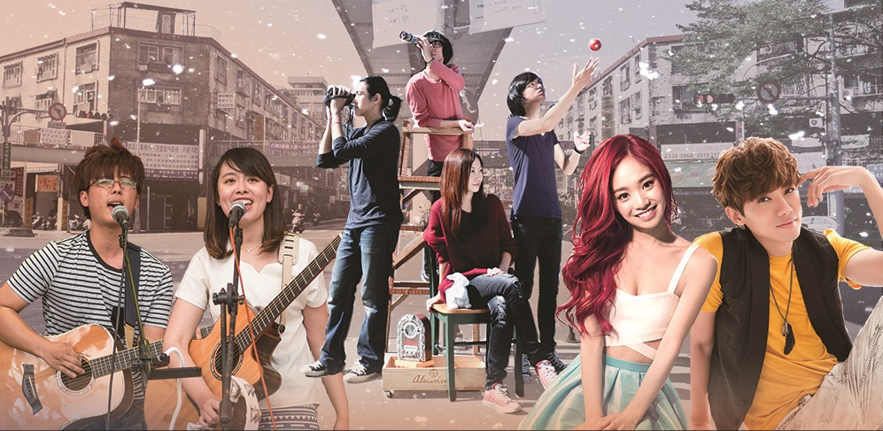

樂園演唱會Concert

成大83周年校慶活動，經過了前面的共榮創作、踩街拓荒、園遊會、遊樂園、動態舞台等各種精采活動，拓荒季也將告了一個段落。就在這個時候，最後的壓軸──閉幕式樂園演唱會，你更該來參加！
有帥哥、美女，當然最重要的是好聽的音樂！
我們特別邀請到校內代表性樂團─白袍與聽診器，與藝人們一起同台演出，為閉幕式呈現一場精采的表演。在這個晚上，除了享受美好的音樂的同時，一同發想在這兩天校慶的回憶。
雖然是這次校慶拓荒季的閉幕式，但是別忘了，屬於我們自己的「拓荒」還沒結束！與身邊的伙伴一起肩並肩的走下去，為我們的青春乾一杯吧～
演唱會資訊Information
【樂園演唱會】
●時間：11/9(日)晚上6點 準時開唱
●地點：成功大學勝利校區南榕廣場
●表演嘉賓：Kimberley(陳芳語)、李唯楓、熊寶貝樂團、白袍與聽診器
成功大學83校慶系列活動-【拓荒季閉幕式】樂園演唱會♫♪